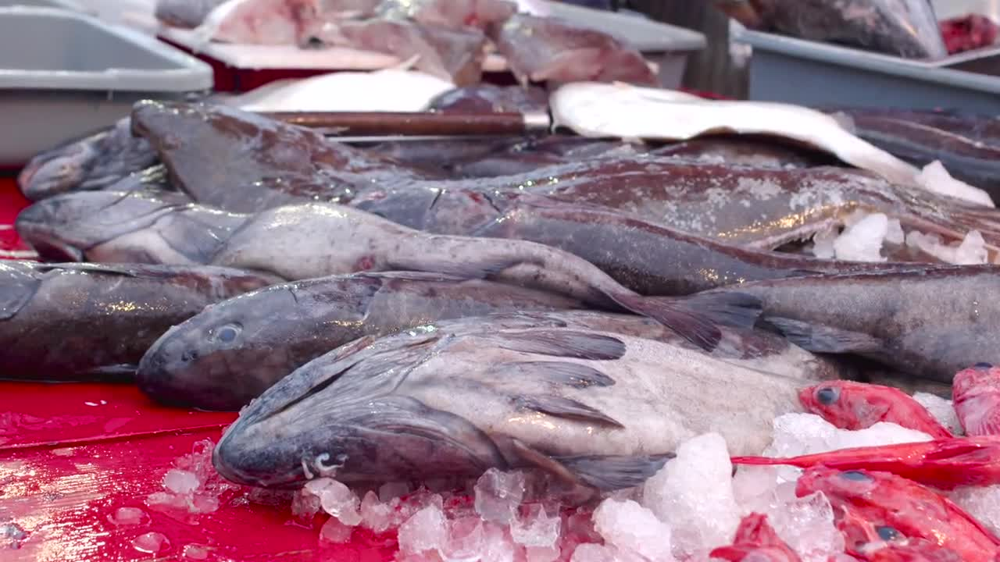

A coastal foundation.
A broader perspective.
Marine ingredients from Aroor, Kerala — connecting the value of the ocean with the needs of industry.

Bristol Proteins
& Oils Pvt. Ltd.
We manufacture marine proteins, fish oils and related ingredients from our base in Aroor’s industrial area, near Kochi.
Our portfolio spans fish meal and soluble paste, a range of marine oils, and specialty ingredients. Each enquiry starts with the intended application, product grade and customer’s specific requirements.
As a sister concern of Bawa Fishmeal & Oil Co., Bristol is part of a wider marine-products business network.
One portfolio.
Many possibilities.
Different applications call for different ingredients.
Explore our range, then speak with our team about specifications, quantities, packaging and delivery. Product suitability and availability are confirmed for each enquiry.
Explore the portfolio